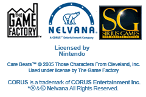
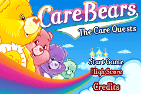

Care Bears - The Care Quest (USA) (En,Fr,Es)
EEPROM 4K
Cartridge Identity
- Game Code
BEAE(FamilyBEA)- Header Title
CARE_BEARS- Maker / Revision
GY/ rev0- ROM Size
- 4.0 MiB (4,194,304 B)
- Save Media
EEPROM 4K- SHA-256
5e629cae8e999327ba53f580482d7f7a9cb8a1f0b53ca9e8734fcf15e3ad69cf- Engine / SDK Group
comm-006(66 families)
Screenshots


ROM Assets, Compression & Audio
- BIOS Compression
- LZ77 (
0x10): 17 streams · RLE (0x30): 0 streams - ROM Pointer Tables
- 13 tables (0 pointing to validated compressed streams)
- SDK Backup Tags
EEPROM_V124
Hardware MMIO Subsystems
ppu_display0x800ec70,0x8014be0,0x8014d18,0x80150dc,0x80151e4